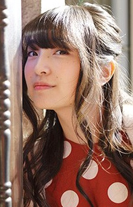

Reina Ueda is a Japanese voice actress and singer. She is affiliated with 81 Produce. She won one of the Rookie Actress Awards in the 9th Seiyu Awards.
- Gender: Female
- Birthday: January 17, 1994
- Hometown: Toyama, Japan
- Skills: Watercolor Painting

|

|

|
|---|
| |
Reina Ueda is a Japanese voice actress and singer. She is affiliated with 81 Produce. She won one of the Rookie Actress Awards in the 9th Seiyu Awards.
|
 |
|---|
 |
Lily |
|
Lily is a conductor in a guild specializing in recovery magic. She spends two much money for gacha rolls. |